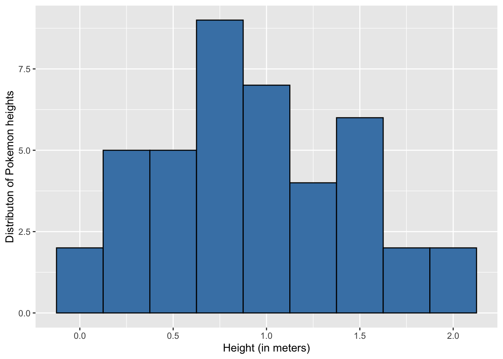
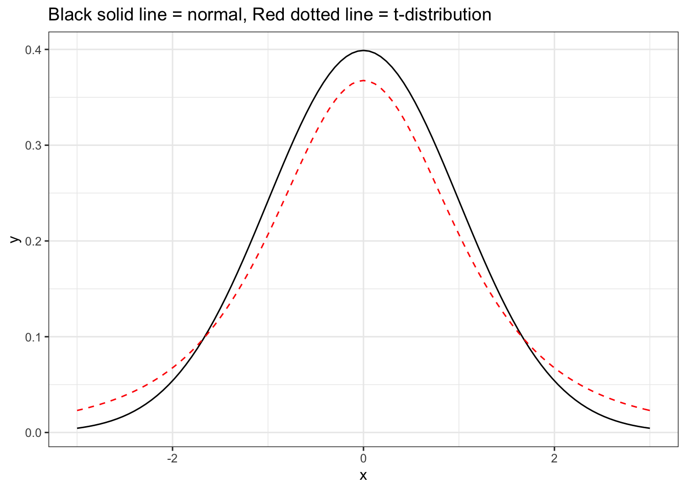

library(tidyverse)
library(tidymodels)Central limit theorem II
STA 199
Bulletin
- this
aeis due for grade. Push your completed ae to GitHub within 48 hours to receive credit - homework 4 due Friday
Getting started
Clone your ae20-username repo from the GitHub organization.
Today
By the end of today you will…
- Use CLT to construct confidence intervals
Load packages
Load Data: Pokemon
We will be using the pokemon data set, which contains information about 42 randomly selected Pokemon (from all generations). You may load in the data set with the following code:
pokemon = read_csv("https://sta101.github.io/static/appex/data/pokemon.csv")In this analysis, we will use CLT-based inference to draw conclusions about the mean height among all Pokemon species.
Exercise 1
Let’s start by looking at the distribution of height_m, the typical height in meters for a Pokemon species, using a visualization and summary statistics.
ggplot(data = pokemon, aes(x = height_m)) +
geom_histogram(binwidth = 0.25, fill = "steelblue", color = "black") +
labs(x = "Height (in meters)",
y = "Distributon of Pokemon heights")
pokemon %>%
summarise(mean_height = mean(height_m),
sd_height = sd(height_m),
n_pokemon = n())# A tibble: 1 × 3
mean_height sd_height n_pokemon
<dbl> <dbl> <int>
1 0.929 0.497 42In the previous lecture we were given the mean, \(\mu\), and standard deviation, \(\sigma\), of the population. That is unrealistic in practice (if we knew \(\mu\) and \(\sigma\), we wouldn’t need to do statistical inference!).
Today we will start on using the Central Limit Theorem to draw conclusions about the \(\mu\), the mean height in the population of Pokemon.
What is the point estimate for \(\mu\), i.e., the “best guess” for the mean height of all Pokemon?
What is the point estimate for \(\sigma\), i.e., the “best guess” for the standard deviation of the distribution of Pokemon heights?
Exercise 2
Before moving forward, let’s check the conditions required to apply the Central Limit Theorem. Are the following conditions met:
- Independence?
- Sample size/distribution?
Central limit theorem
Remember, when the independence and sample size assumptions are met, the central limit theorem states
\[ \bar{x} \sim N(\mu, \sigma / \sqrt{n}) \]
If we know \(\sigma\), we can construct a symmetric confidence interval for the true mean easily using qnorm().
For example, if the true standard deviation in pokemon height is 0.4 meters, then to construct a 95% confidence interval:
xbar = pokemon %>%
summarize(xbar = mean(height_m)) %>%
pull(xbar)
qnorm(c(0.025, 0.975), mean = xbar, sd = 0.4)[1] 0.1445858 1.7125570This can be equivalently expressed
zscore = qnorm(0.025)
xbar + zscore*0.4[1] 0.1445858xbar - zscore*0.4[1] 1.712557where we use the fact that we can write any normal distribution as a linear combination of a standard normal. For example,
if \(X \sim N(0.928, .4)\), then \(X = .4Z + 0.928\) where \(Z\) is standard normal, in other words \(Z \sim N(0, 1)\).
In general, the confidence interval can be written as
\[ \bar{x} \pm z^* \times \sigma \]
where \(z^*\) is the quantile of a standard normal distribution associated with our level of confidence.
What about when we don’t know \(\sigma\)?
Practical confidence intervals
We don’t know the true population mean \(\mu\) and standard deviation \(\sigma\), how do we use CLT to construct a confidence interval?
We approximate \(\mu\) by \(\bar{x}\) and \(\sigma\) by the same standard deviation \(s\). However \(s\) may be smaller than \(\sigma\) and our confidence interval could be too narrow, for example, run the code below to compute the standard deviation of three draws from a standard normal.
set.seed(6)
samples = rnorm(3, mean = 0, sd = 1)
sd(samples)[1] 0.7543284This was just for 1 random seed. If you remove the seed and repeat the simulation, you will find that \(s\) is sometimes above and sometimes below the true standard deviation.
To account for this uncertainty, we will use a distribution with thicker tails. This sampling distribution is called a t-distribution.
ggplot(data = data.frame(x = c(0 - 1*3, 0 + 1*3)), aes(x = x)) +
stat_function(fun = dnorm, args = list(mean = 0, sd = 1),
color = "black") +
stat_function(fun = dt, args = list(df = 3),
color = "red",lty = 2) + theme_bw() +
labs(title = "Black solid line = normal, Red dotted line = t-distribution")
The t-distribution has a bell shape but the extra thick tails help us correct for the variability introduced by using \(s\) instead of \(\sigma\).
The t-distribution, like the standard normal, is always centered at zero. Therefore, the t-distribution has only a single parameter: degrees of freedom. The degrees of freedom describes the precise form of the bell-shaped t-distribution. In general, we’ll use a t-distribution with \(df=n−1\) to model the sample mean when the sample size is \(n\).
We can use qt and pt to find quantiles and probabilities respectively under the t-distribution.
Confidence interval
To construct our practical confidence interval (where we don’t know \(\sigma\)) we use the t-distribution:
\[ \bar{x} \pm t^*_{n-1} \times \frac{s}{\sqrt{n}} \]
Exercise 3
- Calculate the 95% confidence interval for pokemon height using the t-distribution.
# code hereHow does this compare to a 95% bootstrap confidence interval?
# code here